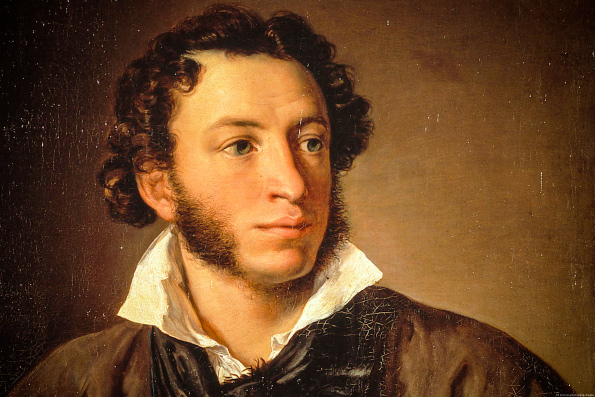
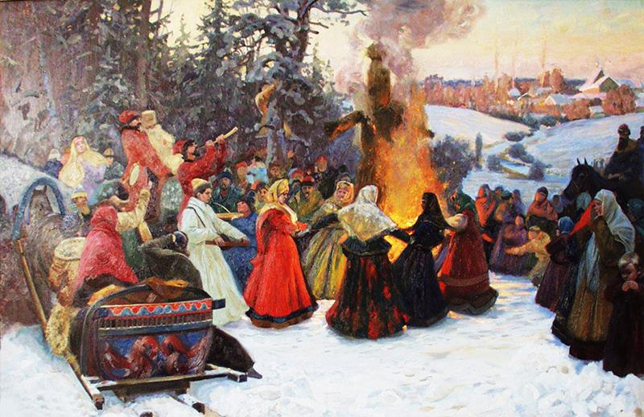
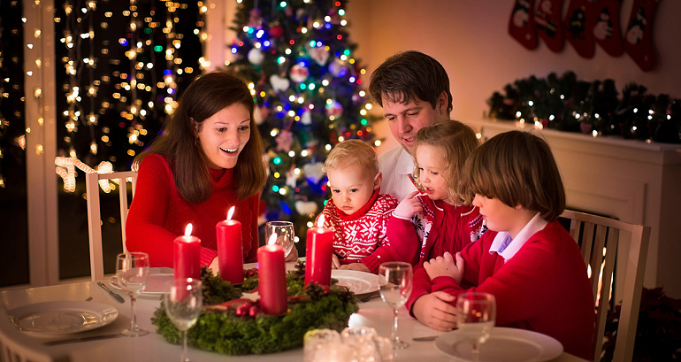
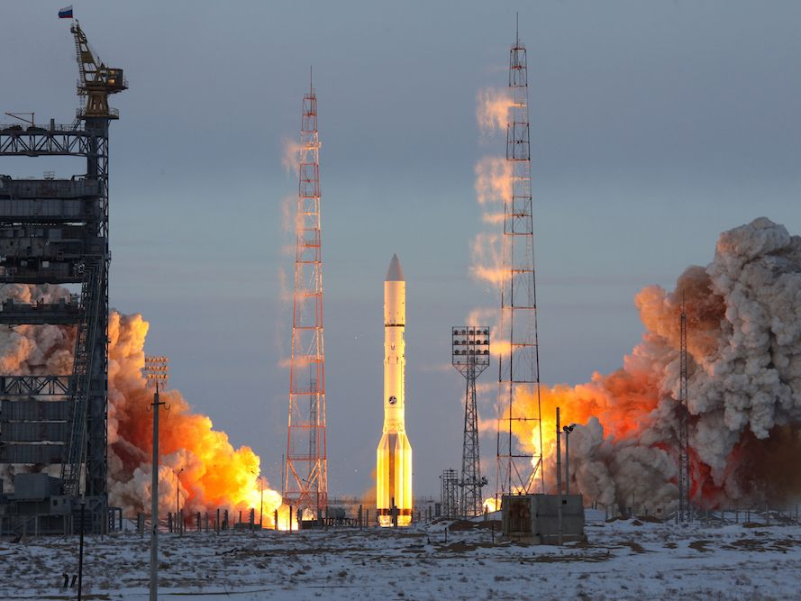
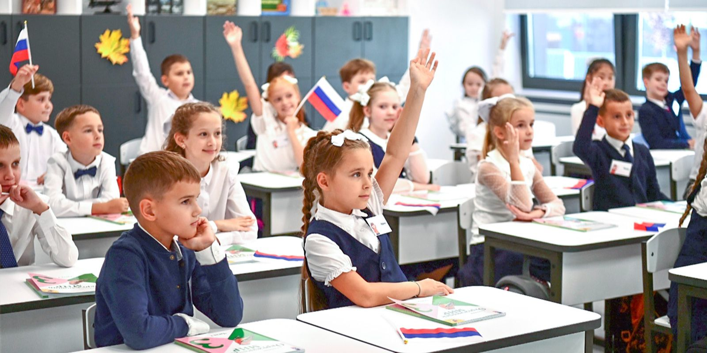

1. Sightseeing in Russia
Project theme: Sightseeing in Russia
Photo 1

Photo 2

Task: Imagine that you are doing a project "Sightseeing in Russia" with your friend. You have found some illustrations and want to share the news. Leave a voice message to your friend. In 2.5 minutes be ready to:
- explain the choice of the illustrations for the project by briefly describing them and noting the differences;
- mention the advantages (1–2) of the two types of sightseeing;
- mention the disadvantages (1–2) of the two types of sightseeing;
- express your opinion on the subject of the project — which way of sightseeing in Russia you would prefer and why.
2. Famous people of Russia
Project theme: Famous people of Russia
Photo 1

Photo 2

Task: Imagine that you are doing a project "Famous people of Russia" with your friend. Leave a voice message. In 2.5 minutes be ready to:
- explain the choice of the illustrations for the project (brief description + differences);
- mention the advantages (1–2) of being a famous writer vs. a famous explorer;
- mention the disadvantages (1–2) of these career paths;
- express your opinion on which person's contribution to Russian culture/history you find more inspiring and why.
3. Russian holidays and traditions
Project theme: Russian holidays and traditions
Photo 1

Photo 2

Task: Imagine that you are doing a project "Russian holidays and traditions". Leave a voice message. In 2.5 minutes be ready to:
- explain the choice of the illustrations (brief description + differences);
- mention the advantages (1–2) of public outdoor festivals vs. family home traditions;
- mention the disadvantages (1–2) of both;
- express your opinion on which type of celebration you prefer and why.
4. Nature and environmental issues
Project theme: Nature and environmental issues in Russia
Photo 1

Photo 2

Task: Imagine that you are doing a project "Nature and environmental issues in Russia". Leave a voice message. In 2.5 minutes be ready to:
- explain the choice of the illustrations (brief description + differences);
- mention the benefits of Russia's vast nature;
- mention the most pressing environmental problems in Russia shown or implied by the photos;
- express your opinion on whether people in Russia do enough to protect the environment and why.
5. Life in the city and countryside
Project theme: Life in the city and countryside in Russia
Photo 1

Photo 2

Task: Imagine that you are doing a project "Life in the city and countryside". Leave a voice message. In 2.5 minutes be ready to:
- explain the choice of the illustrations (brief description + differences);
- mention the advantages (1–2) of living in a big city vs. a village;
- mention the disadvantages (1–2) of both;
- express your opinion on where you would like to live in the future and why.
6. Science and space exploration
Project theme: Russian contribution to science and space exploration
Photo 1
Photo 2

Task: Imagine that you are doing a project "Russian contribution to science and space exploration". Leave a voice message. In 2.5 minutes be ready to:
- explain the choice of the illustrations (brief description + differences);
- mention the importance of scientific research vs. space missions;
- mention the difficulties of these fields;
- express your opinion on which area of Russian science makes you feel more proud and why.
7. Schooling in Russia
Project theme: Schooling in Russia
Photo 1

Photo 2

Task: Imagine that you are doing a project "Schooling in Russia". Leave a voice message. In 2.5 minutes be ready to:
- explain the choice of the illustrations (brief description + differences);
- mention the advantages (1–2) of traditional school education vs. distance learning;
- mention the disadvantages (1–2) of both;
- express your opinion on which way of schooling you find more effective for yourself and why.